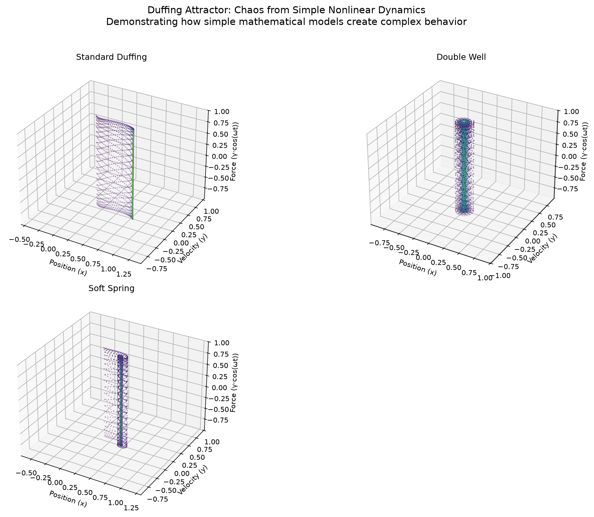

🌀 Lorenz Attractor

Equations: dx/dt = sigma(y-x), dy/dt = x(rho-z)-y, dz/dt = xy
The butterfly that started it all. Two convective rolls linked by a thin bridge — the most iconic strange attractor. Its discovery in 1963 by Edward Lorenz launched modern chaos theory.
🌊 Rössler Attractor

Equations: dx/dt = -y-z, dy/dt = x+ay, dz/dt = b+z(x-c)
Simpler than Lorenz — only ONE nonlinear term. The "folded ribbon" attractor. Its single spiral fold makes it the pedagogical gateway to chaos.
✨ Hénon Map

Equations: x' = 1-ax^2+y, y' = bx
A discrete-time 2D map that produces a strange attractor with fractal (Cantor-set-like) cross-section. Self-similar at every zoom level.
🍂 Feigenbaum Constant
Constant: delta ~ 4.6692016091...
The universal rate of period-doubling bifurcations. Discovered by Mitchell Feigenbaum in 1975 — the boundary between order and chaos is itself governed by a universal constant. ALL routes to chaos through period-doubling share this number.
📐 Duffing Attractor

Equation: x'' + delta*x' - x + x^3 = gamma*cos(omega*t)
The nonlinear oscillator. A driven damped pendulum with a double-well potential. Period-doubling cascades, strange attractors, and chaotic jumps between wells.
🔮 Mandelbrot Set
Equation: z_{n+1} = z_n^2 + c
Not a dynamical system per se, but the geometric signature of complexity itself. Infinite detail at the boundary — the most complex object in mathematics.